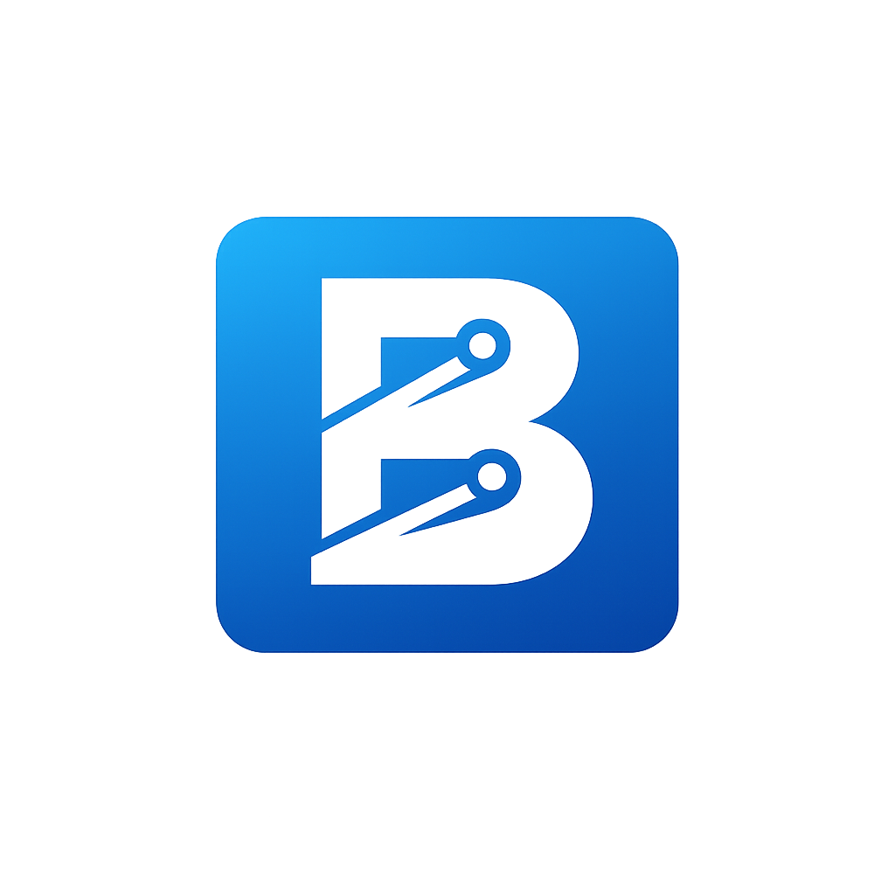

Contributors
The People Behind AntechLearn
Meet the developers who built and continue to grow this platform.

Antech Greyhat
Lead Developer & Founder
The architect behind AntechLearn. Passionate about making quality programming education free and accessible to everyone.
View GitHub Profile
Bravera Chacha
Co-Developer · Backend Engineer
Backend engineer focused on building robust APIs and infrastructure. Responsible for the platform's authentication and data systems.
View GitHub Profile